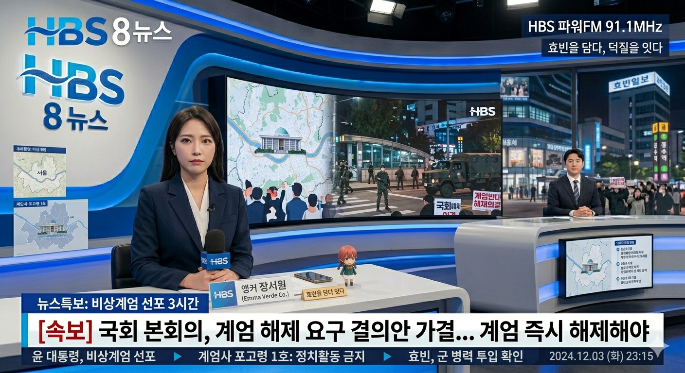

재난특보
재난특보
LIVE ON-AIR
시청자 제보: 079-214-2311
재난특보

"효빈 2.2% 득표율은 북한 해킹" 주장하며 45년 만에 계엄 발동... 국회 무력화 시도
시 공무원 전원 비상 소집, 시청 출입구 봉쇄... "위헌적 명령 거부"
우신면 "지하 벙커 찾아내라" 난동... 시민들 역사로 집결해 스크럼
여당 지도부 일부 연락 두절... 야당 "내란죄 탄핵 추진"
안천동 트럭 부대 시청으로 이동 중... 창전시장 상인들 소금 뿌리며 저항